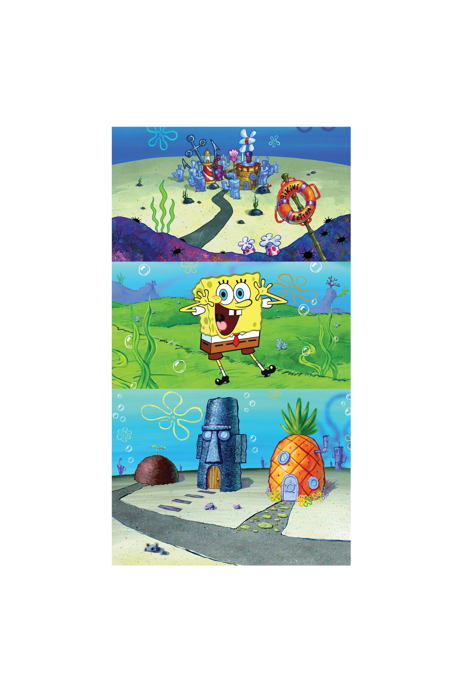

Bikini Bottom Map
This Mapbox style is inspired by my favorite childhood TV show, SpongeBob SquarePants.

I drew inspiration from the bright colors, sandy texture, and iconic flowers in the sky.


Let's explore some different geographies. First, Asheville, North Carolina. Notice the pineapples representing cities.
New York City, where we see lots of bright pink in the streets.
Brisbane, Australia, where you can see the iconic SpongeBob flowers to the east and the sandy expanse to the west.
And, Golf of Morbihan, France, with the bright green natural areas inspired by SpongeBob's jellyfishing and the SpongeBob font for the water labels.


Here's the full map style!
Credits:
Map created with Mapbox Studio
Data from OpenStreetMap
SpongeBob flowers from SVGBees